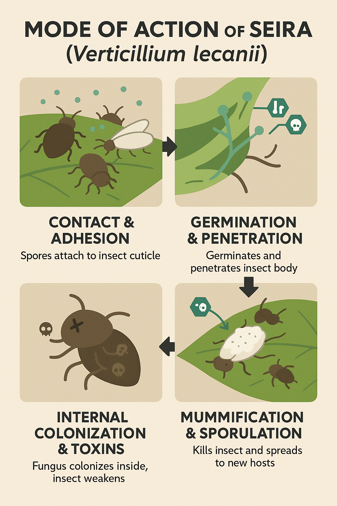

Overview
Seira is an entomopathogenic fungal biopesticide based on Verticillium lecanii. It infects insect pests on contact, germinates on their cuticle, and kills them by internal colonization. It provides targeted pest control while being safe for beneficial insects and the environment.
Mode of Action
The spores of Verticillium lecanii attach to the insect body, germinate, and penetrate through the cuticle using enzymatic action. Once inside, the fungus proliferates, consuming internal tissues and causing the insect’s death. It further sporulates on the cadaver, spreading infection to nearby insects.
Key Features
- Contains 1×1010 CFU/g viable spores for consistent efficacy.
- Highly effective under humid environmental conditions.
- Selective for sucking pests and soft-bodied insects.
- Safe for pollinators and beneficial organisms.
- Organic-certifiable and compatible with IPM programs.
Dosage & Dilution
| Formulation | CFU Count | Dosage (per acre) | Dilution | Spray Interval |
|---|---|---|---|---|
| WP | 1×1010 CFU/g | 500–1000 g | 2–3 g/L | 7–10 days |
| EC | 1×1010 CFU/g | 400–500 ml | 1.5–2.5 ml/L | 7–10 days |
Compatibility
- Compatible with organic foliar inputs and biostimulants.
- Avoid tank mixing with fungicides or strong alkaline substances.
- Apply during high humidity or evening hours for best infection rates.
Target Use & Benefits
Recommended Crops: Vegetables, fruits, pulses, ornamentals, and plantation crops.
Target Pests: Aphids, whiteflies, mealybugs, and soft-bodied insects.
Key Benefits: Natural, selective pest control solution with no residues — ideal for organic farming and export compliance.